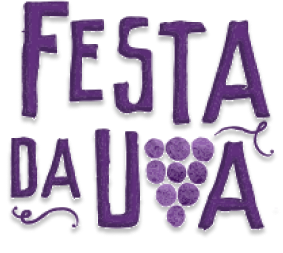

Festa da Uva
Uma celebração da cultura e da colheita de uvas em Caxias do Sul.
História da Festa da Uva
A Festa da Uva começou em 1931 como uma celebração simples da colheita de uvas. Hoje, é um evento muito maior.
Atividades da Festa
Os visitantes participam de desfiles, shows e competições de vinho. As atividades são mais diversificadas do que no passado.
Importância Cultural e Econômica
A Festa da Uva traz muitos turistas, ajudando a economia local, além de representar a herança cultural dos imigrantes italianos.
Rainha e Princesas
Todo ano, a festa elege uma Rainha e duas Princesas, que promovem o evento e participam de eventos oficiais.
Degustação de Vinhos e Produtos Locais
Os visitantes podem degustar vinhos, sucos e geleias feitos com uvas de qualidade superior da região.
Por que a Festa é Especial?
A Festa da Uva combina tradição, cultura e economia, sendo mais diversificada e atraente do que outras festas da colheita.